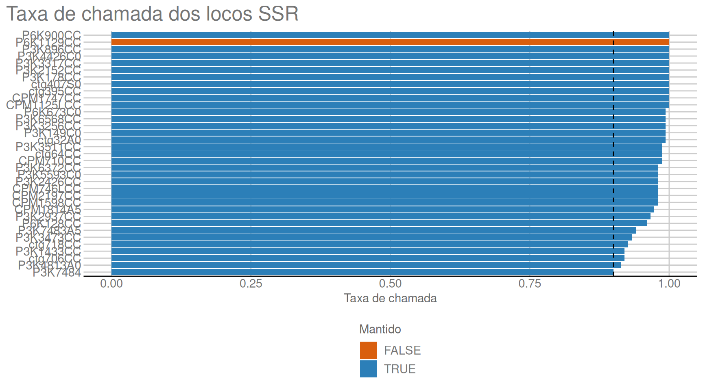
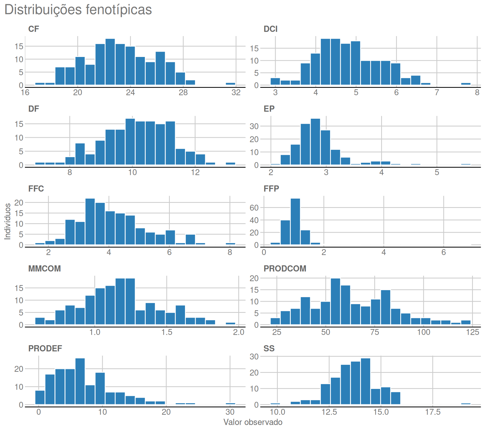

Last updated: 2026-07-17
Checks: 7 0
Knit directory:
Bayesian-ridge-regression-papaya/
This reproducible R Markdown analysis was created with workflowr (version 1.7.2). The Checks tab describes the reproducibility checks that were applied when the results were created. The Past versions tab lists the development history.
Great! Since the R Markdown file has been committed to the Git repository, you know the exact version of the code that produced these results.
Great job! The global environment was empty. Objects defined in the global environment can affect the analysis in your R Markdown file in unknown ways. For reproduciblity it’s best to always run the code in an empty environment.
The command set.seed(20260717) was run prior to running
the code in the R Markdown file. Setting a seed ensures that any results
that rely on randomness, e.g. subsampling or permutations, are
reproducible.
Great job! Recording the operating system, R version, and package versions is critical for reproducibility.
Nice! There were no cached chunks for this analysis, so you can be confident that you successfully produced the results during this run.
Great job! Using relative paths to the files within your workflowr project makes it easier to run your code on other machines.
Great! You are using Git for version control. Tracking code development and connecting the code version to the results is critical for reproducibility.
The results in this page were generated with repository version 192b57c. See the Past versions tab to see a history of the changes made to the R Markdown and HTML files.
Note that you need to be careful to ensure that all relevant files for
the analysis have been committed to Git prior to generating the results
(you can use wflow_publish or
wflow_git_commit). workflowr only checks the R Markdown
file, but you know if there are other scripts or data files that it
depends on. Below is the status of the Git repository when the results
were generated:
Ignored files:
Ignored: output/marker_qc_by_allele.csv
Ignored: output/marker_qc_by_individual.csv
Ignored: output/marker_qc_by_locus.csv
Ignored: output/preprocessed_papaya_ssr.rds
Ignored: renv/library/
Ignored: renv/staging/
Ignored: tests/testthat/_snaps/
Untracked files:
Untracked: analysis/figure/
Untracked: renv.lock
Untracked: renv/.gitignore
Untracked: renv/activate.R
Note that any generated files, e.g. HTML, png, CSS, etc., are not included in this status report because it is ok for generated content to have uncommitted changes.
These are the previous versions of the repository in which changes were
made to the R Markdown (analysis/01_preprocessing_pt.Rmd)
and HTML (docs/01_preprocessing_pt.html) files. If you’ve
configured a remote Git repository (see ?wflow_git_remote),
click on the hyperlinks in the table below to view the files as they
were in that past version.
| File | Version | Author | Date | Message |
|---|---|---|---|---|
| Rmd | 192b57c | GitHub | 2026-07-17 | Merge aa93f5f9de8bc79cc5d8a7dc07e0449fade1afdf into 7fab957450821a444f053b588a49ec49392bd017 |
| html | 192b57c | GitHub | 2026-07-17 | Merge aa93f5f9de8bc79cc5d8a7dc07e0449fade1afdf into 7fab957450821a444f053b588a49ec49392bd017 |
Esta página estabelece o contrato dos dados antes do ajuste dos
modelos. O processo lê as planilhas-fonte, liga genótipos e fenótipos
pelo identificador da planilha Genealex, audita as chamadas
SSR, expande os genótipos multialélicos em dosagens e fixa os oito folds
da validação cruzada. O objeto resultante é reutilizado por todas as
etapas seguintes.
A tabela fenotípica canônica é Médias_IND_artigo. Os
genótipos possuem 35 locos SSR; o código -9 representa
chamadas ausentes e é convertido em NA. Os IDs são mantidos
como texto para preservar 144B.
inventario <- data.frame(
Item = c(
"Indivíduos", "IDs únicos", "Locos SSR", "Chamadas SSR ausentes",
"Taxa de ausência", "Características fenotípicas", "Fenótipos ausentes",
"Colunas de dosagem alélica mantidas"
),
Valor = c(
length(objeto$ids),
length(unique(objeto$ids)),
ncol(objeto$codigos_ssr),
sum(is.na(objeto$codigos_ssr)),
sprintf("%.2f%%", 100 * mean(is.na(objeto$codigos_ssr))),
ncol(objeto$fenotipos),
sum(is.na(objeto$fenotipos)),
ncol(objeto$dosagens_ssr)
)
)
print(tabela_relatorio(inventario, "Inventário confirmado dos dados", digitos = 0))| Item | Valor |
|---|---|
| Indivíduos | 150 |
| IDs únicos | 150 |
| Locos SSR | 35 |
| Chamadas SSR ausentes | 126 |
| Taxa de ausência | 2.40% |
| Características fenotípicas | 10 |
| Fenótipos ausentes | 0 |
| Colunas de dosagem alélica mantidas | 72 |
As dez respostas abrangem produção, dimensões do fruto, firmeza e sólidos solúveis. Os mesmos códigos e unidades são usados em todo o relatório.
dicionario_pt <- configuracao$dicionario_caracteristicas |>
dplyr::select(Caracteristica = Trait, Descricao = Description_pt, Unidade = Unit)
print(tabela_relatorio(dicionario_pt, "Características fenotípicas"))| Caracteristica | Descricao | Unidade |
|---|---|---|
| MMCOM | Massa média de frutos comerciais | kg |
| PRODCOM | Produção de frutos comerciais | kg |
| PRODEF | Produção de frutos defeituosos | kg |
| CF | Comprimento do fruto | cm |
| DF | Diâmetro do fruto | cm |
| DCI | Diâmetro da cavidade interna | cm |
| EP | Espessura média da polpa | cm |
| FFC | Firmeza externa do fruto | N |
| FFP | Firmeza interna da polpa | N |
| SS | Sólidos solúveis | °Brix |
Cada código genotípico armazena dois alelos. Para cada loco e alelo
observado, o pipeline cria uma coluna de dosagem com valores 0, 1 ou 2.
Assim, quatro locos trialélicos são preservados. Exige-se taxa de
chamada de pelo menos 0,90, mais de uma classe genotípica, frequência
alélica entre 0,05 e 0,95 e variância positiva. O loco
P6K1129CC é removido por possuir uma única classe
observada.
qc_locos <- objeto$auditoria$locos |>
dplyr::mutate(Call_rate = round(Call_rate, 3)) |>
dplyr::arrange(Keep_locus, Call_rate)
print(tabela_relatorio(qc_locos, "Controle de qualidade por loco SSR", rolagem = TRUE))| Locus | N_individuals | N_called | Call_rate | N_genotype_classes | Pass_call_rate | Polymorphic | Keep_locus | |
|---|---|---|---|---|---|---|---|---|
| P6K1129CC | P6K1129CC | 150 | 150 | 1.000 | 1 | TRUE | FALSE | FALSE |
| P3K7484 | P3K7484 | 150 | 135 | 0.900 | 2 | TRUE | TRUE | TRUE |
| P3K4813A0 | P3K4813A0 | 150 | 137 | 0.913 | 3 | TRUE | TRUE | TRUE |
| P3K1433CC | P3K1433CC | 150 | 138 | 0.920 | 3 | TRUE | TRUE | TRUE |
| ctg706CC | ctg706CC | 150 | 138 | 0.920 | 3 | TRUE | TRUE | TRUE |
| ctg718CC | ctg718CC | 150 | 139 | 0.927 | 3 | TRUE | TRUE | TRUE |
| P3K3473CC | P3K3473CC | 150 | 140 | 0.933 | 2 | TRUE | TRUE | TRUE |
| P3K7483A5 | P3K7483A5 | 150 | 141 | 0.940 | 3 | TRUE | TRUE | TRUE |
| P6K128CC | P6K128CC | 150 | 144 | 0.960 | 3 | TRUE | TRUE | TRUE |
| P3K2937CC | P3K2937CC | 150 | 145 | 0.967 | 3 | TRUE | TRUE | TRUE |
| CPM1814A5 | CPM1814A5 | 150 | 146 | 0.973 | 3 | TRUE | TRUE | TRUE |
| CPM1598CC | CPM1598CC | 150 | 147 | 0.980 | 3 | TRUE | TRUE | TRUE |
| P3K5593C0 | P3K5593C0 | 150 | 147 | 0.980 | 3 | TRUE | TRUE | TRUE |
| CPM746LCC | CPM746LCC | 150 | 147 | 0.980 | 3 | TRUE | TRUE | TRUE |
| P3K6372CC | P3K6372CC | 150 | 147 | 0.980 | 3 | TRUE | TRUE | TRUE |
| CPM2197CC | CPM2197CC | 150 | 147 | 0.980 | 3 | TRUE | TRUE | TRUE |
| P3K2426CC | P3K2426CC | 150 | 147 | 0.980 | 2 | TRUE | TRUE | TRUE |
| P3K3511CC | P3K3511CC | 150 | 148 | 0.987 | 3 | TRUE | TRUE | TRUE |
| ctg64CC | ctg64CC | 150 | 148 | 0.987 | 2 | TRUE | TRUE | TRUE |
| CPM710CC | CPM710CC | 150 | 148 | 0.987 | 3 | TRUE | TRUE | TRUE |
| P3K3256CC | P3K3256CC | 150 | 149 | 0.993 | 5 | TRUE | TRUE | TRUE |
| P3K149C0 | P3K149C0 | 150 | 149 | 0.993 | 5 | TRUE | TRUE | TRUE |
| P6K673C0 | P6K673C0 | 150 | 149 | 0.993 | 3 | TRUE | TRUE | TRUE |
| P3K6568CC | P3K6568CC | 150 | 149 | 0.993 | 4 | TRUE | TRUE | TRUE |
| ctg32A0 | ctg32A0 | 150 | 149 | 0.993 | 3 | TRUE | TRUE | TRUE |
| P6K900CC | P6K900CC | 150 | 150 | 1.000 | 3 | TRUE | TRUE | TRUE |
| ctg395CC | ctg395CC | 150 | 150 | 1.000 | 2 | TRUE | TRUE | TRUE |
| CPM1125LCC | CPM1125LCC | 150 | 150 | 1.000 | 3 | TRUE | TRUE | TRUE |
| P3K3317CC | P3K3317CC | 150 | 150 | 1.000 | 3 | TRUE | TRUE | TRUE |
| P3K2152CC | P3K2152CC | 150 | 150 | 1.000 | 3 | TRUE | TRUE | TRUE |
| CPM1747CC | CPM1747CC | 150 | 150 | 1.000 | 3 | TRUE | TRUE | TRUE |
| P3K896CC | P3K896CC | 150 | 150 | 1.000 | 3 | TRUE | TRUE | TRUE |
| ctg407S0 | ctg407S0 | 150 | 150 | 1.000 | 3 | TRUE | TRUE | TRUE |
| P3K4426C0 | P3K4426C0 | 150 | 150 | 1.000 | 4 | TRUE | TRUE | TRUE |
| P3K178CC | P3K178CC | 150 | 150 | 1.000 | 3 | TRUE | TRUE | TRUE |
O gráfico mostra a taxa de chamada de cada loco e o limite inclusivo de 0,90.

| Version | Author | Date |
|---|---|---|
| 192b57c | GitHub | 2026-07-17 |
A matriz fenotípica canônica é completa. Os resumos abaixo verificam a escala de cada variável; os modelos preservam as unidades originais.
resumo_fenotipos <- data.frame(
Caracteristica = colnames(objeto$fenotipos),
N = colSums(is.finite(objeto$fenotipos)),
Media = colMeans(objeto$fenotipos),
DP = apply(objeto$fenotipos, 2L, stats::sd),
Minimo = apply(objeto$fenotipos, 2L, min),
Maximo = apply(objeto$fenotipos, 2L, max),
row.names = NULL
)
print(tabela_relatorio(resumo_fenotipos, "Resumo dos fenótipos"))| Caracteristica | N | Media | DP | Minimo | Maximo |
|---|---|---|---|---|---|
| MMCOM | 150 | 1.181 | 0.266 | 0.620 | 1.943 |
| PRODCOM | 150 | 63.510 | 21.518 | 24.225 | 121.609 |
| PRODEF | 150 | 7.150 | 5.005 | 0.200 | 30.073 |
| CF | 150 | 23.247 | 2.665 | 17.140 | 31.580 |
| DF | 150 | 10.143 | 1.108 | 7.049 | 13.129 |
| DCI | 150 | 4.825 | 0.815 | 2.998 | 7.719 |
| EP | 150 | 2.887 | 0.462 | 2.080 | 5.523 |
| FFC | 150 | 4.150 | 1.147 | 1.720 | 8.020 |
| FFP | 150 | 1.057 | 0.561 | 0.380 | 6.740 |
| SS | 150 | 13.731 | 1.171 | 9.900 | 19.100 |
As distribuições são apresentadas em painéis com escalas livres, pois as unidades diferem entre as características.

| Version | Author | Date |
|---|---|---|
| 192b57c | GitHub | 2026-07-17 |
Os folds determinísticos são estratificados pela família fenotípica. Cada indivíduo é validado uma vez, os tamanhos diferem no máximo por uma unidade e todos os níveis de família permanecem em cada treinamento. Médias dos marcadores, imputação, verificação de variância, centralização e matriz de relacionamento são recalculadas somente com os indivíduos de treinamento.
resumo_folds <- data.frame(
Fold = seq_len(configuracao$n_folds),
Individuos_validacao = tabulate(objeto$folds, nbins = configuracao$n_folds)
)
print(tabela_relatorio(resumo_folds, "Alocação fixa em oito folds", digitos = 0))| Fold | Individuos_validacao |
|---|---|
| 1 | 19 |
| 2 | 19 |
| 3 | 19 |
| 4 | 19 |
| 5 | 19 |
| 6 | 19 |
| 7 | 18 |
| 8 | 18 |
O desenho dos efeitos fixos é bloco + família. O posto
completo é verificado em cada conjunto de treinamento antes do
ajuste.
As páginas seguintes recebem fenótipos alinhados, matrizes de efeitos fixos, dosagens filtradas, folds comuns e transformações específicas de cada treino. Assim, as comparações entre modelos usam exatamente os mesmos indivíduos de validação.
sessionInfo()R version 4.5.1 (2025-06-13)
Platform: x86_64-pc-linux-gnu
Running under: Ubuntu 24.04.4 LTS
Matrix products: default
BLAS: /usr/lib/x86_64-linux-gnu/openblas-pthread/libblas.so.3
LAPACK: /usr/lib/x86_64-linux-gnu/openblas-pthread/libopenblasp-r0.3.26.so; LAPACK version 3.12.0
locale:
[1] LC_CTYPE=C.UTF-8 LC_NUMERIC=C LC_TIME=C.UTF-8
[4] LC_COLLATE=C.UTF-8 LC_MONETARY=C.UTF-8 LC_MESSAGES=C.UTF-8
[7] LC_PAPER=C.UTF-8 LC_NAME=C LC_ADDRESS=C
[10] LC_TELEPHONE=C LC_MEASUREMENT=C.UTF-8 LC_IDENTIFICATION=C
time zone: UTC
tzcode source: system (glibc)
attached base packages:
[1] stats graphics grDevices datasets utils methods base
other attached packages:
[1] workflowr_1.7.2
loaded via a namespace (and not attached):
[1] tidyr_1.3.2 sass_0.4.10 generics_0.1.4 renv_1.2.3
[5] xml2_1.6.0 stringi_1.8.7 digest_0.6.39 magrittr_2.0.5
[9] grid_4.5.1 evaluate_1.0.5 RColorBrewer_1.1-3 fastmap_1.2.0
[13] rprojroot_2.1.1 jsonlite_2.0.0 processx_3.9.0 whisker_0.4.1
[17] ggthemes_5.2.0 ps_1.9.3 promises_1.5.0 httr_1.4.8
[21] purrr_1.2.2 viridisLite_0.4.3 scales_1.4.0 textshaping_1.0.5
[25] jquerylib_0.1.4 cli_3.6.6 rlang_1.3.0 withr_3.0.3
[29] cachem_1.1.0 yaml_2.3.12 otel_0.2.0 tools_4.5.1
[33] dplyr_1.2.1 ggplot2_4.0.3 httpuv_1.6.17 kableExtra_1.4.1
[37] vctrs_0.7.3 R6_2.6.1 lifecycle_1.0.5 git2r_0.36.2
[41] stringr_1.6.0 fs_2.1.0 pkgconfig_2.0.3 callr_3.8.0
[45] gtable_0.3.6 pillar_1.11.1 bslib_0.11.0 later_1.4.8
[49] glue_1.8.1 Rcpp_1.1.2 systemfonts_1.3.2 xfun_0.60
[53] tibble_3.3.1 tidyselect_1.2.1 rstudioapi_0.19.0 knitr_1.51
[57] farver_2.1.2 htmltools_0.5.9 labeling_0.4.3 rmarkdown_2.31
[61] svglite_2.2.2 compiler_4.5.1 S7_0.2.2 getPass_0.2-4